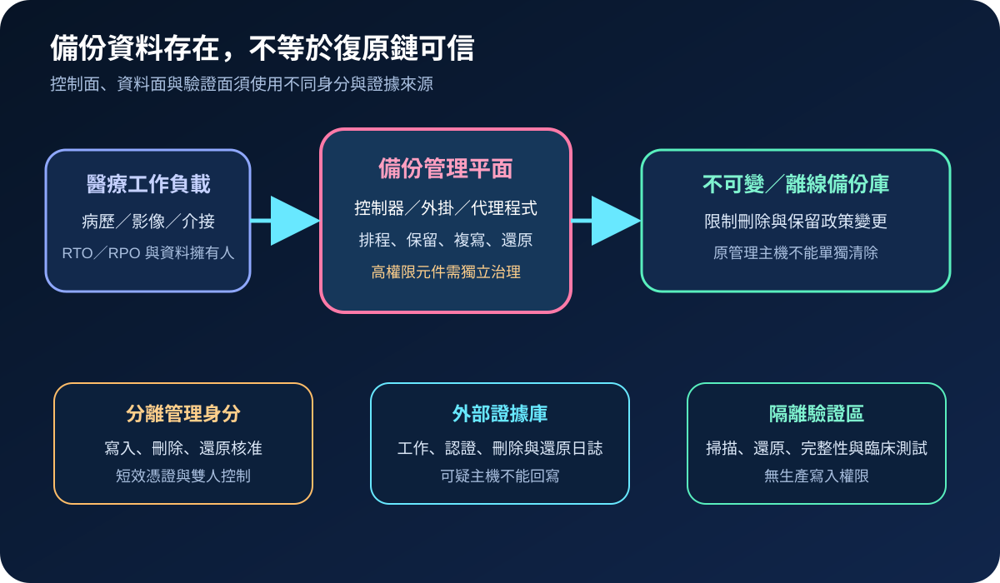
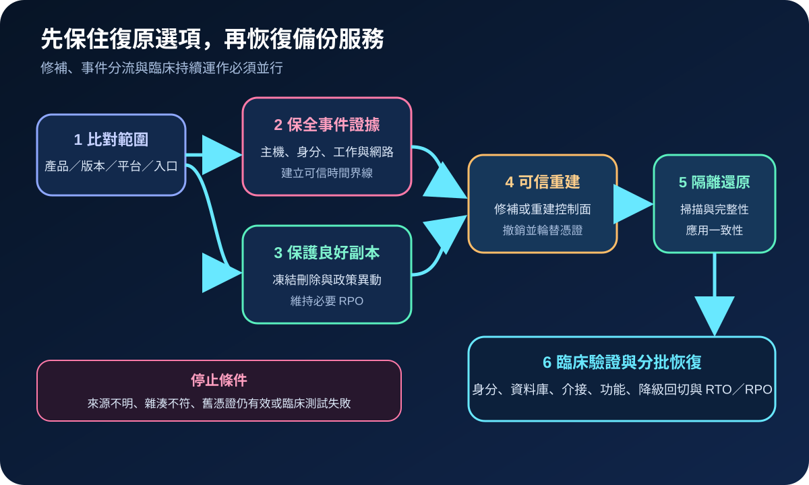
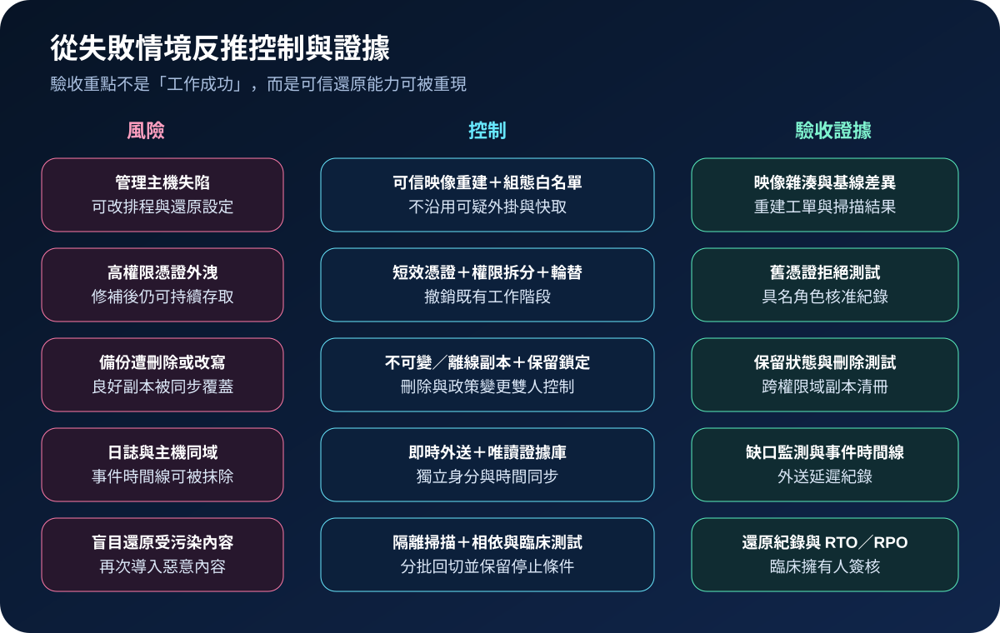

醫療資安國際觀察 · 2026-09-18
備份管理元件遭利用時如何保住復原能力：從主機權限到乾淨還原
作者：Dr. William｜醫療資訊與資安治理實務工作者
備份外掛與控制程式通常握有讀取資料、建立快照及啟動還原的高影響能力。這些元件出現已知遭利用漏洞時，修補只是第一步；醫療機構還須確認管理主機、備份內容、憑證與還原鏈是否仍可信。
名詞解釋：備份資料與管理平面是兩個風險面
管理平面負責設定備份工作、保留政策、帳號與還原；權限提升是低權限使用者取得較高系統權限；不可變備份在保留期內限制修改或刪除；乾淨還原則從已驗證的資料、映像與身分重新建立服務。即使備份檔仍存在，遭控制的管理元件也可能改寫排程、竊取憑證或把受污染內容帶入復原環境。
國際現況與適用邊界
Acronis 於 2026 年 9 月 17 日發布 SEC-10986，指出 CVE-2026-87886 源自不安全檔案權限，可造成本機權限提升；受影響產品為 Linux 上特定版本之前的 cPanel & WHM 外掛、Plesk 擴充套件及 DirectAdmin 外掛。公告另指出，已偵測到針對 cPanel & WHM 外掛部署的有限度、針對性利用。CISA 於 9 月 16 日將漏洞納入 KEV，要求美國聯邦機關進行鑑識分流並依供應商指示處置。
法域與產品邊界：CISA 的 2026 年 9 月 19 日期限與 BOD 26-04 義務適用美國聯邦文職行政機關，不是台灣醫療機構的法定期限。已知遭利用描述限於 Acronis 公告所述 cPanel & WHM 外掛部署，不能推論所有 Acronis 產品、所有備份系統或醫療設備均遭利用。台灣機構應先依產品、版本、平台與實際曝險判定。
規劃：以可復原服務為範圍，不只盤點備份軟體
清冊應連結備份控制器、外掛、管理主機、服務帳號、金鑰、儲存庫、複寫目標、保留政策及對應臨床服務。基礎架構團隊維護版本與工作；資安單位判定入侵並保全證據；系統擁有人確認 RTO／RPO 與降級流程；備份管理者不得單獨掌握刪除、修改保留政策及核准還原的全部權限。驗收可追蹤元件盤點率、修補覆蓋率、獨立日誌覆蓋率、不可變副本成功率及隔離還原通過率。

實作：先保護復原選項，再恢復備份服務
- 比對範圍：確認所有正式、備援與測試主機上的產品、外掛、版本、平台、外部入口及服務帳號。
- 保全與限制：把系統、認證、備份工作、刪除與還原紀錄送往獨立權限域；限制可疑主機連線與高風險管理操作。
- 保護副本：確認離線或不可變副本仍在保留期內，暫停未授權的刪除、保留政策變更與跨站複寫覆寫。
- 更新或重建：依供應商修正版更新。若主機完整性無法證明，從可信映像重建，不沿用可疑外掛、組態、快取或長效憑證。
- 輪替權限：更換管理、儲存、雲端與代理程式憑證，撤銷舊工作階段，並分離備份寫入、刪除及還原核准權限。
- 隔離驗證：在無生產寫入權限的環境掃描並還原代表性資料，核對時間點、完整性、應用一致性與臨床流程，再分批恢復。
風險：看到成功工作，不等於保有可信還原點
備份工作顯示成功，可能只代表資料已寫入，無法證明管理主機、憑證或內容未遭竄改。直接刪除可疑主機會破壞鑑識線索；把所有複寫立即停掉又可能錯過 RPO。處置應先標記可信時間界線、保留至少一份隔離副本，並由不同權限域驗證日誌與雜湊。復原測試還須涵蓋身分服務、相依資料庫、醫療介接與人工降級流程，避免只驗證單一檔案可開啟。

可執行清單
- 能否列出每個備份元件的產品、版本、平台、管理入口與對應臨床服務？
- 刪除備份、修改保留政策與核准還原是否由不同角色控制？
- 是否至少有一份備份不受原管理主機與原管理帳號直接刪除？
- 備份、認證及儲存日誌是否即時送往獨立權限域？
- 疑似失陷時，是否能先保全證據、隔離良好副本並維持必要 RPO？
- 最近一次隔離還原是否驗證資料完整、應用相依與臨床流程？
來源
- Acronis｜SEC-10986: Local privilege escalation due to insecure file permissions（發布：2026-09-17；查閱：2026-09-18）
- CISA｜Known Exploited Vulnerabilities Catalog：CVE-2026-87886（加入：2026-09-16；查閱：2026-09-18）
- NIST｜SP 800-209: Security Guidelines for Storage Infrastructure（發布：2020-10；查閱：2026-09-18）
- CISA｜#StopRansomware Guide（查閱：2026-09-18）
內容說明
本文依健康台灣深耕計畫相關治理內容整理，並參考 Acronis、CISA 與 NIST 公開資料，提出台灣醫療機構可採用的備份管理平面事件處置與乾淨還原方法；不取代主管機關公告、法律意見、供應商文件、事件鑑識或個案臨床風險判斷。